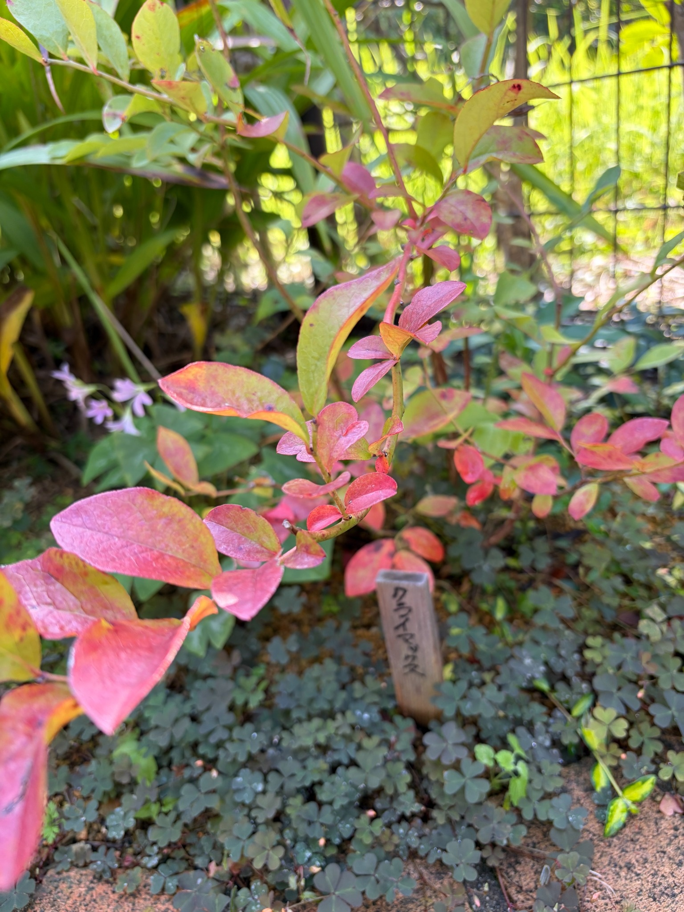

2026/10/16 桃色や赤紫色の葉が目を引くクライマックス。秋の枝葉を近くで眺めました
9月22日の記録から24日がたちました。庭のクライマックスは、今回も赤く色づいた葉が目を引きます。
枝に近づいて眺めると、赤色だけでなく、桃色や赤紫色、黄色、黄緑色など、いろいろな色が混じっています。葉全体が赤くなったものもあれば、緑を残しながら縁が赤くなったものもあり、一枚ずつ違った表情を見せています。
前回は、下の枝に赤い葉が目立つ一方で、上の枝には緑色や黄緑色の葉が残っている様子を記録しました。今回は枝葉を近くから撮り、葉の色や葉脈、枝とのつながりを眺めてみました。
今年は実を収穫して食べる楽しみがありましたが、秋を迎えた今は、葉の色にも目が向きます。同じクライマックスを育てていても、季節によって楽しみになるところが変わってきました。
9月22日から続く、赤い葉のある姿
前回の9月22日には、株の下の方から横へ広がる枝に、赤色や赤紫色の葉がまとまっていました。その間には緑色や黄緑色の葉も残り、株の中でも枝の位置によって色の印象が違っていました。
10月16日の今回も、赤い葉と緑を残した葉が入り交じっています。手前の枝では、桃色に近い明るい赤や、少し紫がかった赤色が目立ちます。その奥や上の方には黄緑色の葉も見え、すべての葉が同じ色にそろったわけではありません。
9月から続けて赤い葉を見ていますが、今回は前回より枝に近づいて撮っています。赤い葉が画面を大きく占めているからといって、株全体で赤い葉がどれだけ増えたのかまでは分かりません。
それでも、前回から気になっていた色の違いを、今度は一枚の葉の中まで眺めることができました。離れて見たときの「赤い葉がある株」という印象が、近づくと、いくつもの色が重なる姿に変わります。
桃色や赤紫色に見える、手前の葉
写真の手前側には、桃色や赤紫色に見える葉があります。明るいところでは赤がやわらかく見え、少し陰になる部分では色が深く感じられます。
特に左手前の大きな葉は、赤紫色を帯びた面の中に黄緑色や黄色みが残っています。葉の中央を通る葉脈と、その両側へ分かれる細い葉脈も見え、色だけでなく葉そのものの形にも目が向きます。
小さな葉にも赤みがあり、枝に沿って大きさの違う葉がついています。同じ枝の中でも、明るい桃色に近い葉、濃い赤色の葉、緑を残した葉があり、まとまって眺めたときとは違う細かさがあります。
ブルーベリーは実を楽しみに育て始めましたが、こうして葉に近づくと、果実のない時期にも眺めるところがあります。赤い葉が庭の緑の中で目を引き、収穫のときとはまた違う楽しみになっています。
一枚の葉にも、いくつもの色が重なっています
今回の葉で面白いと感じるのは、一枚の中にいくつもの色があることです。
葉全体が赤く見えるものもありますが、黄緑色を広く残し、その縁や先の方が赤くなっている葉もあります。黄色と赤が重なる部分では橙色に近く見え、赤い部分と緑の部分の境目も、はっきり分かれるところと、少しずつ混じるところがあります。
中央付近の細長い葉では、黄緑色の面に赤みが重なり、縁には赤色や橙色が見えます。葉先に向かって反っているものもあり、葉の向きによって表と縁の色の違いが分かります。
一枚ずつ色づき方が違うため、赤い葉と緑の葉を単純に分けるだけでは、今の姿を言い表せません。赤くなりながらも緑を残している葉が、その間をつないでいるように見えます。
これからその緑の部分も赤くなるのか、それとも色むらを残したまま葉が落ちていくのか。今の色を眺めながら、その先の変化も気になります。
上の方には、黄緑色の葉も残っています
手前の赤い葉に目が向きますが、上の方を見ると、黄緑色や緑色を残した葉があります。
上部の葉にも、縁の赤みや暗い色の斑点が見えるものがあります。ただ、手前の葉ほど全体が赤く見えるわけではなく、一つの株の中でも色づき方には違いがあります。
9月22日にも、下の赤い葉と上の緑の葉の違いが気になりました。今回の写真でも、赤く見える葉の奥に黄緑色の葉が残り、その違いを引き続き見ることができます。
葉の位置だけでなく、向きや日差しによっても見え方は変わります。明るい光が当たると黄色みが強く見え、陰になった葉は緑が濃く感じられるところもあります。
同じ株だからすべて同じように変わるのではなく、それぞれの枝葉に違いがある。そのことが、近くで眺めるほどよく分かります。

葉脈や表面の様子も見えてきました
赤く色づいた葉では、中央の葉脈だけでなく、そこから左右へ分かれる細い線も見えます。葉の面には細かな凹凸があり、光の当たる部分と陰になる部分で、その表情が変わっています。
遠くから見ていると葉の色に目が向きますが、近くでは、葉の厚みや反り、葉先の形にも気づきます。平らに開いたように見えるものもあれば、縁が少し持ち上がったものや、先が曲がったものもあります。
ただ、葉が反っているからといって、それだけで傷んでいるとは決められません。葉の向きや形には違いがあり、写真の中でもさまざまな姿が見えています。
葉の色と形を一緒に残しておくことで、次に眺めたときにも、ただ赤くなったかどうかだけでなく、葉がどんな状態で枝に残っているのかを見ていけそうです。
斑点や葉先の変色も、そのまま残しておきます
赤い葉はきれいですが、葉をよく見ると、暗い色の斑点や色むらもあります。上部の黄緑色の葉には、赤褐色から暗い色に見える部分があり、葉先や縁の色が変わっているものも見られます。
前回の記録でも、葉の斑点や葉先・縁の傷みについて触れました。今回も、葉がすべて均一できれいな状態になっているわけではありません。
赤く色づく様子と、部分的な変色が重なっているため、色だけで株の状態を読み取るのは難しく感じます。秋らしい色を楽しみながらも、斑点や褐色の部分には引き続き目を向けておきたいです。
今回の写真だけでは、前回と同じ葉の斑点が広がったのか、別の葉に見えているものなのかまでは分かりません。傷みが増えたと決めつけず、今見えている状態を記録しておきます。
この後は、葉の色だけでなく、斑点のある葉がどう変わるのか、枝にどれくらい葉が残るのかも気になります。きれいに見えるところと気になるところの両方を、同じ株の姿として残していきたいと思います。
赤みのある枝に、葉が続いてついています
中央の枝には赤みがあり、その節ごとに大きさの違う葉がついています。枝が曲がりながら伸び、その両側に葉が重なる様子が見えます。
葉だけを眺めていると一枚ずつの色の違いに目が向きますが、枝をたどると、それらが一つにつながっていることが分かります。赤い葉と黄緑色を残す葉が、同じ枝の流れの中にあります。
細い枝にも葉がついていますが、今回の写真は一部分を近くから撮ったものです。株全体の枝数や、前回から伸びた長さ、葉の増減までは比べられません。
今回は、赤みのある枝に色の違う葉が残っていること、枝先へ向かって小さな葉も見えることを、10月16日の姿として残しておきます。小さな葉だからといって、今回新しく出た葉だとは決めずに見ていきます。
周囲の緑の中で、赤い葉が際立っています
背景には、周りの植物の緑が広がっています。その中で、クライマックスの赤い葉が手前に浮かび上がるように見えます。
足元には小さな葉の植物が広がり、奥には細長い葉も重なっています。クライマックスだけでなく周りの植物もあるため、庭の一角として見ると、緑の中に赤い色が加わったような印象です。
写真の奥には、「クライマックス」と書いた木製の名札も見えています。昨年12月に植え付けた場所で、季節ごとの姿を残してきた株です。
植え付けたとき、実を収穫したとき、9月に葉の色を眺めたとき、そして今回。同じ名札のある場所でも、その時々で目を引くものが変わります。庭に出て株を眺める楽しさは、そうした小さな違いにもあるのだと思います。
実を楽しんだ後は、葉の色を眺める季節に
昨年12月16日に地植えしてから、ちょうど10か月がたちました。
今年はクライマックスだけでなく、プレミア、メンデイトも実をつけ、3品種とも収穫を楽しむことができました。ヨーグルトに混ぜておいしく食べられたことは、育て始めてからのうれしい経験です。
果実の写真は撮れませんでしたが、その後の株の姿は、9月5日、9月22日、そして10月16日と残してこられました。収穫の記録から、葉や枝を見守る記録へとつながっています。
今回のクライマックスは、手前の枝で桃色や赤紫色の葉が目立ち、一枚の中にも黄緑色や黄色、赤色が重なっています。上の方には緑を残す葉もあり、株の中にはまだ色の違いがあります。
実を収穫する楽しみを味わった後に、こうして葉の色にも目を向けられることを、うれしく感じます。一方で、斑点や葉先の変色もあるので、見た目の美しさだけで株の調子を決めず、これからの姿も見ていきたいと思います。
2026年10月16日。赤く色づいた葉を近くで眺めながら、初めての夏と収穫を経験したクライマックスの、その後を記録しました。